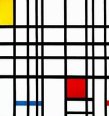

Piet

Composition with Red,
Yellow and Blue.
1921, Piet Mondrian.
|
Introduction
Piet is a programming language in which programs look like abstract paintings. The language is named after
Piet Mondrian, who pioneered the field of geometric abstract
art. I would have liked to call the language Mondrian, but
someone beat me to it with a rather mundane-looking
scripting language. Oh well, we can't all be esoteric language writers I suppose.
Design Principles
- Program code will be in the form of abstract art.
Language Concepts
Colours
#FFC0C0
light red |
#FFFFC0
light yellow |
#C0FFC0
light green |
#C0FFFF
light cyan |
#C0C0FF
light blue |
#FFC0FF
light magenta |
#FF0000
red |
#FFFF00
yellow |
#00FF00
green |
#00FFFF
cyan |
#0000FF
blue |
#FF00FF
magenta |
#C00000
dark red |
#C0C000
dark yellow |
#00C000
dark green |
#00C0C0
dark cyan |
#0000C0
dark blue |
#C000C0
dark magenta |
| #FFFFFF white |
#000000 black |
Piet uses 20 distinct colours, as shown in the table at right.
The 18 colours in the first 3 rows of the table are related cyclically in the following two ways:
- Hue Cycle: red -> yellow -> green -> cyan -> blue -> magenta -> red
- Lightness Cycle: light -> normal -> dark -> light
Note that "light" is considered to be one step "darker" than "dark", and vice versa. White and black do not fall into
either cycle.
Additional colours (such as orange, brown) may be used, though their effect is implementation-dependent. In the simplest
case, non-standard colours are treated by the language interpreter as the same as white, so may be used freely wherever
white is used. (Another possibility is that they are treated the same as black.)
Codels
Piet code takes the form of graphics made up of the recognised colours. Individual pixels of colour are significant in the
language, so it is common for programs to be enlarged for viewing so that the details are easily visible. In such enlarged
programs, the term "codel" is used to mean a block of colour equivalent to a single pixel of code, to avoid confusion with
the actual pixels of the enlarged graphic, of which many may make up one codel.
Colour Blocks
The basic unit of Piet code is the colour block. A colour block is a contiguous block of any number of codels of one colour,
bounded by blocks of other colours or by the edge of the program graphic. Blocks of colour adjacent only diagonally are not
considered contiguous. A colour block may be any shape and may have "holes" of other colours inside it, which are not considered
part of the block.
Stack
Piet uses a stack for storage of all data values. Data values exist only as integers, though they may be read in or
printed as Unicode character values with appropriate commands.
Program Execution
| DP | CC | Codel chosen |
| right | left | uppermost |
| right | lowermost |
| down | left | rightmost |
| right | leftmost |
| left | left | lowermost |
| right | uppermost |
| up | left | leftmost |
| right | rightmost |
The Piet language interpreter begins executing a program in the colour block which includes the upper left codel of the program.
The interpreter maintains a Direction Pointer (DP), initially pointing to the right. The DP may point either right,
left, down or up. The interpreter also maintains a Codel Chooser (CC), initially pointing left. The CC may point
either left or right. The directions of the DP and CC will often change during program execution.
As it executes the program, the interpreter traverses the colour blocks of the program under the following rules:
- The interpreter finds the edge of the current colour block which is furthest in the direction of the DP. (This edge may
be disjoint if the block is of a complex shape.)
- The interpreter finds the codel of the current colour block on that edge which is furthest to the CC's direction of the DP's
direction of travel. (Visualise this as standing on the program and walking in the direction of the DP; see table at right.)
- The interpreter travels from that codel into the colour block containing the codel immediately in the direction of the DP.
The interpreter continues doing this until the program terminates.
Syntax Elements
Numbers
Each non-black, non-white colour block in a Piet program represents an integer equal to the number of codels in that block.
Note that non-positive integers cannot be represented, although they can be constructed with operators. When the interpreter
encounters a number, it does not necessarily do anything with it. In particular, it is not automatically pushed on to the
stack - there is an explicit command for that (see below).
Black Blocks and Edges
Black colour blocks and the edges of the program restrict program flow.
If the Piet interpreter attempts to move into a black block
or off an edge, it is stopped and the CC is toggled. The interpreter
then attempts to move from its current block again. If it fails
a second time, the DP is moved clockwise one step. These attempts are
repeated, with the CC and DP being changed between alternate
attempts. If after eight attempts the interpreter cannot leave its
current colour block, there is no way out and the program terminates.
White Blocks
White colour blocks are "free" zones through which the interpreter
passes unhindered. If it moves from a colour block into a white
area, the interpreter "slides" through the white codels in the direction
of the DP until it reaches a non-white colour block.
If the interpreter slides into a black block or an edge, it is
considered restricted (see above), otherwise it moves into the
colour block so encountered. Sliding across white blocks into a new
colour does not cause a command to be executed (see below). In this way,
white blocks can be used to change the current colour without executing a
command, which is very useful for coding loops.
Clarification of white block behaviour (added 25 January, 2008):
Sliding across white blocks takes the interpreter in a straight line until it hits a coloured pixel or edge. It does not use the procedure
described above for determining where the interpreter emerges from non-white coloured blocks.
Precisely what happens when the interpeter slides across a white block
and hits a black block or an edge was not clear with the original
specification. My interpretation follows from a literal reading of the
above text:
- The interpreter "slides" across the white block in a straight line.
- If it hits a restriction, the CC is toggled. Since this results
in no difference in where the interpreter is trying to go, the DP is
immediately stepped clockwise.
- The interpreter now begins sliding from its current white
codel, in the new direction of the DP, until it either enters a coloured
block or
encounters another restriction.
- Each time the interpreter hits a restriction while within the
white block, it toggles the CC and steps the DP clockwise, then tries to
slide
again. This process repeats until the interpreter either enters a
coloured block (where execution then continues); or until the
interpreter
begins retracing its route. If it retraces its route entirely within a
white block, there is no way out of the white block and execution should
terminate.
Commands
| | Lightness change |
| Hue change | None | 1 Darker | 2 Darker |
| None | | push | pop |
| 1 Step | add | subtract | multiply |
| 2 Steps | divide | mod | not |
| 3 Steps | greater | pointer | switch |
| 4 Steps | duplicate | roll | in(number) |
| 5 Steps | in(char) | out(number) | out(char) |
Commands are defined by the transition of colour from one colour block to the next as the interpreter travels through the
program. The number of steps along the Hue Cycle and Lightness Cycle in each transition determine the command executed, as shown
in the table at right. If the transition between colour blocks occurs via a slide across a white block, no command is executed.
The individual commands are explained below.
- push: Pushes the value of the colour block just exited on to the stack. Note that values of colour blocks are
not automatically pushed on to the stack - this push operation must be explicitly carried out.
- pop: Pops the top value off the stack and discards it.
- add: Pops the top two values off the stack, adds them, and pushes the result back on the stack.
- subtract: Pops the top two values off the stack, subtracts the top value from the second top value,
and pushes the result back on the stack.
- multiply: Pops the top two values off the stack, multiplies them, and pushes the result back on the stack.
- divide: Pops the top two values off the stack, calculates the integer division of the second top value by the
top value, and pushes the result back on the stack.
- mod: Pops the top two values off the stack, calculates the second top value modulo the top value,
and pushes the result back on the stack.
- not: Replaces the top value of the stack with 0 if it is non-zero, and 1 if it is zero.
- greater: Pops the top two values off the stack, and pushes 1 on to the stack if the second top value is
greater than the top value, and pushes 0 if it is not greater.
- pointer: Pops the top value off the stack and rotates the DP clockwise that many steps (anticlockwise if negative).
- switch: Pops the top value off the stack and toggles the CC that many times.
- duplicate: Pushes a copy of the top value on the stack on to the stack.
- roll: Pops the top two values off the stack and "rolls" the remaining stack entries to a depth equal to the
second value popped, by a number of rolls equal to the first value popped. A single roll to depth n is defined as burying the
top value on the stack n deep and bringing all values above it up by 1 place. A negative number of rolls rolls in the opposite
direction. A negative depth is an error and the command is ignored.
- in: Reads a value from STDIN as either a number or character, depending
on the particular incarnation of this command and pushes it on to the stack.
- out: Pops the top value off the stack and prints it to STDOUT as either a number or character, depending
on the particular incarnation of this command.
Any operations which cannot be performed (such as popping values when not enough are on the stack) are simply ignored.
Sample Programs and Resources
Home | Esoteric Programming Languages
Last updated: Friday, 25 January, 2008; 02:48:17 PST.
Copyright © 1990-2013, David Morgan-Mar. dmm@dangermouse.net
Hosted by: DreamHost